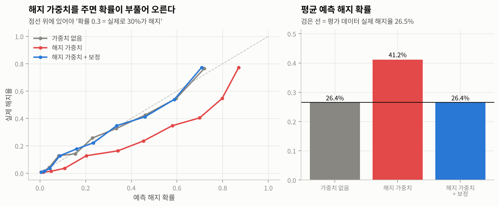
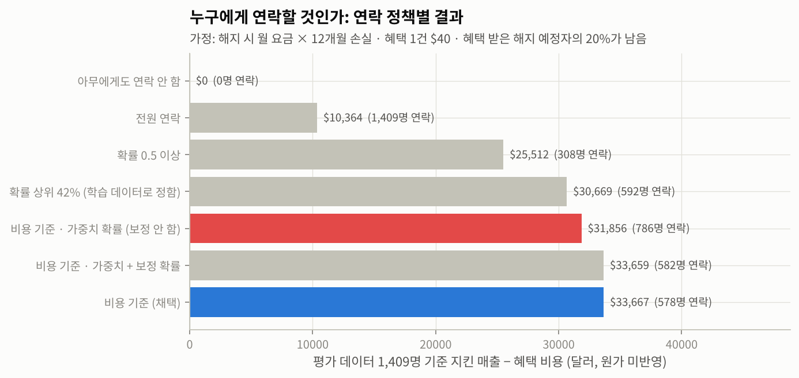
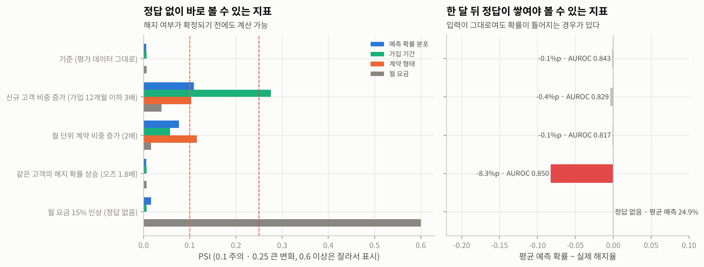
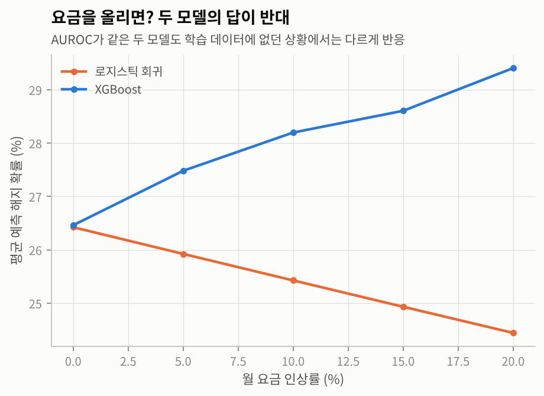

누가 해지할지 예측하는 데서 끝내지 않고, 그 확률로 누구에게 해지 방어 혜택을 줄지 정하고, 운영 중에 무엇을 지켜봐야 하는지까지 정리한 프로젝트
| 기간 | 2026.11 |
| 인원 | 개인 |
| 데이터 | 통신사 고객 7,043명 (IBM Telco Customer Churn 공개 데이터), 지난 한 달 해지 1,869명 (26.5%) |
| 주요 기술 | Python, SQLite·SQL, pandas, scikit-learn, XGBoost, matplotlib, pytest |
| GitHub | sung-ju-park/telco-churn-retention |
해지 방어는 해지할 것 같은 고객에게 할인이나 혜택을 주는 일입니다. 해지하지 않을 고객에게 혜택을 주면 비용만 나가고, 요금이 낮은 고객은 지켜도 남는 매출이 적습니다. 그래서 모델은 해지할 고객을 위에 세우는 순위뿐 아니라, 비용과 비교할 수 있게 확률 자체가 실제 해지율과 맞아야 합니다. 이 프로젝트는 확률을 검증하고, 그 확률로 연락 대상을 정하고, 운영에서 어떤 지표를 봐야 하는지까지 따라가는 것이 목표였습니다.
해지 고객이 26.5%로 적어서 해지 고객에 가중치를 주는 방법을 흔히 씁니다. 직접 비교해 보니 AUROC는 0.843으로 똑같은데 평균 예측 확률이 26.4%에서 41.2%로 부풀었고, 요금 4개 구간 모두에서 실제보다 1.4~2.1배 높았습니다. 이 확률로 연락 대상을 정하면 연락하지 말아야 할 고객까지 연락하게 됩니다. 가정을 바꿔 계산한 20가지 중 18가지에서 결과가 나빠졌고, 혜택이 비쌀 때는 최대 34%까지 손해였습니다.

가중치 없이 학습해 실제 해지율과 맞는 확률을 쓰고, 고객마다 '해지 확률 × 남는 비율 × 월 요금 12개월치 − 혜택 비용'이 0보다 큰 고객만 연락하게 했습니다. 이렇게 하면 요금이 $100인 고객은 해지 확률 17%만 넘어도 연락할 가치가 있고, $30인 고객은 56%를 넘어야 합니다. 혜택 비용($40)과 남는 비율(20%)은 데이터에 없는 값이라 가정으로 두고, 결론이 가정에 따라 어떻게 바뀌는지 함께 계산했습니다.

평가 고객 1,409명 기준으로 578명에게 연락해 지킨 매출 − 혜택 비용 $33,667을 남겼습니다. 학습 데이터로 정한 '확률 상위 42%' 방식보다 $2,998 많았습니다 (95% 신뢰구간 $1,054 ~ $5,008). 같은 578명을 해지 확률 순으로만 고르면 해지자는 5명 더 잡지만 결과는 $2,715 적었습니다. 해지자를 많이 잡는 것과 매출을 지키는 것은 다르다는 점을 숫자로 확인했습니다.
혜택이 '1개월 요금 할인'처럼 요금에 비례하면 기대값 식에서 요금이 약분되어 모든 고객에게 같은 기준 확률(41.7%)이 됩니다. 이때 정액 쿠폰 기준을 그대로 쓰면 31% 손해라서, 고르는 규칙은 모델보다 혜택 설계에 따라 정해야 한다고 정리했습니다. 남는 비율 20%를 실제로 재려면 혜택을 주지 않는 대조군이 필요하고, 통화가 연결된 1,207명이면 효과 유무는 확인되지만 남는 비율은 ±12%p 범위로만 알 수 있다는 것도 계산했습니다.
운영 모니터링 시뮬레이션에서는 모든 고객의 해지 위험이 함께 오르는 경우 입력 분포도 예측 분포도 그대로라, 정답이 쌓인 뒤 평균 예측과 실제 해지율의 차이(−8.3%p)로만 드러났습니다. 그래서 매달 이 차이를 요금 구간별로 보는 것을 기본 점검으로 두었습니다.

마지막으로 요금을 올려 보니 AUROC가 같은 두 모델이 정반대로 반응했습니다. 이 데이터의 월 요금은 가입 서비스 구성으로 99.9% 설명되어 '요금만 오르는 상황'을 모델이 배운 적이 없기 때문입니다. 요금 인상 효과는 예측이 아니라 일부 고객에게 먼저 적용해 보는 실험으로 재야 한다고 정리했습니다.

공개 데이터라 국내 해지 방어의 핵심 변수인 약정 만료 시점, 단말 할부 잔여, 결합 상품 정보가 없고, 시점 정보가 없어 기간을 나눈 검증을 하지 못했습니다. 혜택을 받았는지 기록도 없어 '혜택을 주면 마음을 바꿀 고객'을 찾는 업리프트 모델은 할 수 없었습니다. 혜택 비용과 효과는 모두 가정이며, 원가를 빼지 않은 매출 기준입니다.